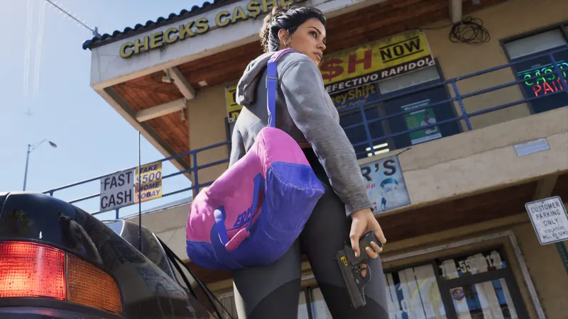

Do you lose money when you die in GTA 6?
Short answer
Yes: all the cash you're carrying is lost if you're Wasted or Busted. Move it into your BuckMe checking account. And be careful: money put into Family Savings can never come back out.

Pocket cash
Jason and Lucia can each carry up to $20,000 in cash. Most businesses take it for purchases up to $1,000. If you're Wasted or Busted, you lose all of it.
BuckMe checking account
It unlocks during Chapter 1 and handles every purchase over $1,000. Open the BuckMe app from your phone (d-pad up). Each character has their own account, and balance limits rise as the story goes on, with upgrades flagged in Chapters 2, 3 and 4. If you hit the limit, incoming payments sit as pending until there's room.
Family Savings: one-way only
Family Savings is shared between Jason and Lucia and has five savings goals. Once money goes in, it can never be transferred out, though bigger balances earn more interest when the limit rises. Think before you transfer.
All of the above comes from GamesRadar's guide; we haven't found a second source yet.
Sources
Written by Six Stars from the sources above, checked on November 20, 2026. Spot a mistake? Tell us via About us.